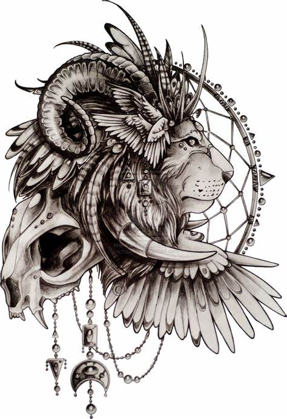
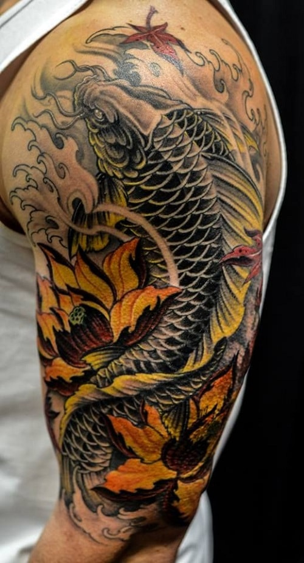
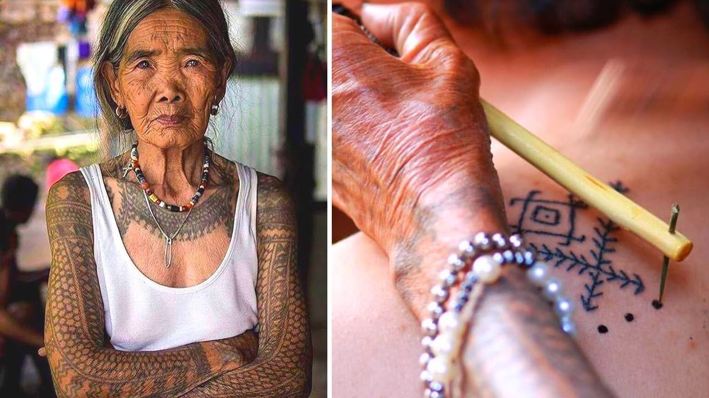
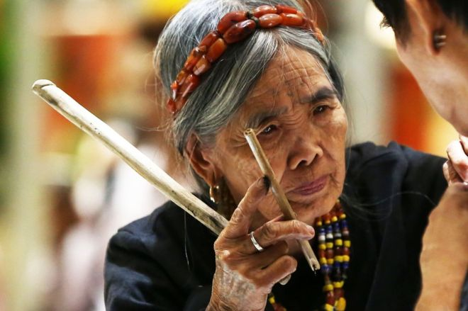

What is Tattoo
A tattoo is a form of body modification made by inserting ink, dyes, and/or pigments, either indelible or temporary, into the dermis layer of the skin to form a design. The art of making tattoos is tattooing. Tattoos fall into three broad categories: purely decorative (with no specific meaning); symbolic (with a specific meaning pertinent to the wearer); and pictorial (a depiction of a specific person or item). In addition, tattoos can be used for identification such as ear tattoos on livestock as a form of branding.

The word tattoo, or tattow in the 18th century, is a loanword from the Samoan word tatau, meaning "to strike".The Oxford English Dictionary gives the etymology of tattoo as "In 18th c. tattaow, tattow. From Polynesian (Samoan, Tahitian, Tongan, etc.) tatau. In Marquesan, tatu." Before the importation of the Polynesian word, the practice of tattooing had been described in the West as painting, scarring or staining.
Designing of your Tattoo
Designing your own tattoo is a way to permanently decorate your body with an image or symbol that is of special significance to you. A custom design is also a great way to express yourself or stand out from the crowd!
Sketch the design. If you can draw, sketching the tattoo is a fantastic way to give your tattoo artist a more accurate picture of just what exactly you want to get inked when you go into the parlor. Get out a piece of paper and draw the tattoo to scale. Don’t be afraid to go through multiple drafts - you are drawing something that will go on your body permanently, so take your time and work on the sketch until it’s just right. You can draft a rough sketch and bring it to the tattoo artist. You can even collaborate with a tattoo artist by explaining to them the design you want and having them advise you on location, coloring, and type of ink. You will have to explain very carefully what you envision and likely go through multiple drafts until the drawing is just right.
Japanese Koi Tattoo
Japanese Koi Fish Tattoo Meaning Koi fish are popular symbols of Japanese culture and part of Japan’s national identity.Their meanings to the Japanese are anything from luck and prosperity to perseverance through a life struggle. A traditional Japanese tattoo, also called tebori, is typically done in blue or red surrounded by water and or flowers.
Blue Koi Fish Tattoo Meaning Blue is often associated with water, which happens to be where koi live, emphasizing its meaning. Between the koi and the water, there can be too much blue, so this tattoo is often accented with red in the form of flowers or second koi fish. The blue koi fish tattoo symbolizes peace and tranquility as well as harmony with nature. It can also be a symbol of masculinity and is a common tattoo for men. Black Koi Fish Tattoo Meaning Black koi fish tattoos symbolize masculinity and even fatherhood; however, they can be done on women or men. This is because the black koi fish tattoo’s second meaning is an accomplishment through a struggle in life such as financial battles or struggle with mental illness.
Batok Tattooing
Batok/Fatek/Burik/ Tatak/Batek are all terms for prePhilippine Hand-tapped Tattoos or Ancestral Skin Markings in different Philippine languages. The markings are done by using bone/wood implements and ink, which are used to “tap” the designs into the skin.
Batok is a prePhilippine hand-tapped tattoo practice. Unlike mainstream or machine tattoos, A practitioner uses and makes the ancestral implements [tools that have been created by hand by the practitioner using natural materials] to create skin markings. Traditionally, you as the recipient do not choose the design and/or the placement. In prePhilippine society, your tattoos served as your identifier. It also may tell others about your family history and where your family comes from in the Philippine archipelago. Our markings are mnemonic devices of our oral histories, and our stories.
